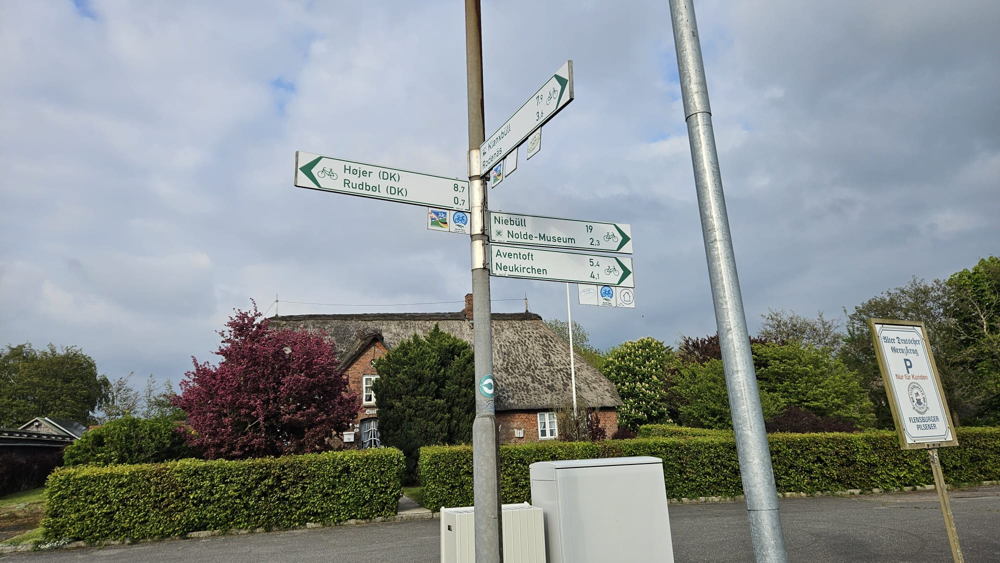
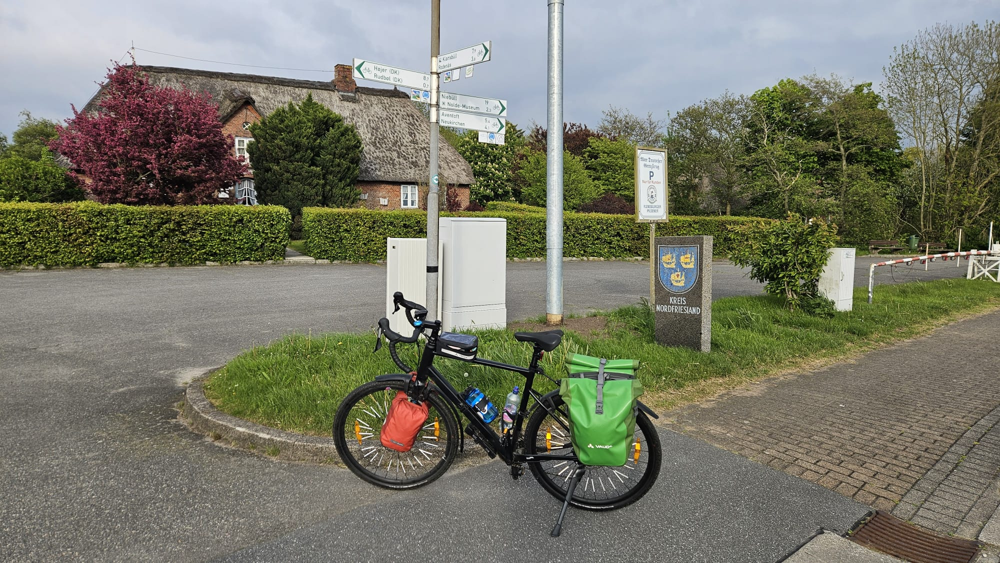
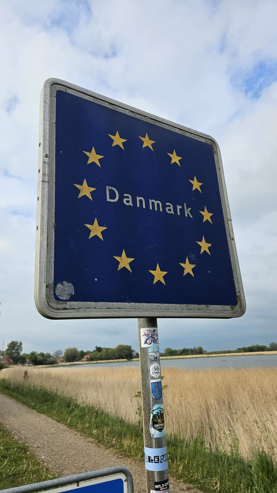

Nordseeküstenradweg & Hærvejen - Die große Dänemark-Tour
Im Mai 2026 bin ich den dänischen Teil des Nordseeküstenradwegs von Klanxbüll (DE) bis Frederikshavn gefahren. Zurück an die deutsche Grenze ging es dann über den Hærvejen von Frederikshavn bis Flensburg (DE). Obwohl ich beide Radfernwege in einer Tour vereint habe, fühlte es sich doch aufgrund der Streckencharakteristik wie zwei ganz verschiedene Touren an: Der Nordseeküstenradweg ist – wie zu erwarten – flach und küstennah, auch wenn man das Meer gerade zu Beginn nicht so oft sieht. Der Hærvejen hingegen verläuft durch das Inland Dänemarks und ist geprägt von Landwirtschaft, Schotterwegen und vielen sanften Hügeln, die am Ende des Tages doch für mehr Höhenmeter sorgen, als man denkt.
Am Ende kann ich sagen, dass ich einen schönen Urlaub hatte. Am Nordseeküstenradweg hatte ich fast immer leichten Rückenwind und nur ein Tag war richtig verregnet (nicht dass es an den anderen Tagen keine Schauer gab). Und auch der Hærvejen hat mir immer wieder schöne Ausblicke gebracht und mich an sonnigen Tagen durch kühle Wälder geführt. Ich habe zum ersten Mal ohne mein Zelt in einem Shelter übernachtet und konnte einfach mal ganz alleine für mich sein. Dennoch war es auch eine anstrengende Tour. Gerade auf dem Hærvejen hatte ich viel mit dem Wind zu kämpfen und die Höhenmeter sind für meine norddeutschen Beine sehr ungewohnt gewesen. Dazu kommen noch eine rostige, durchhängende Fahrradkette, fragwürdige Bremsgeräusche und 7(!) Platten in 12 Tagen.
Meine Route, Unterkünfte und Wasserquellen
| Tourdauer | 12 Tage |
|---|---|
| Tourlänge | ca. 1.100 km |
| Anzahl Platten | 7 |
| Gesamtbewertung | 8/10 |
Anreisetag – Von Klanxbüll bis Emmerlev
Meine Reise startete an einem Sonntagnachmittag. Von Hamburg aus bin ich zunächst ab Altona mit dem RE 6 Richtung Westerland (Sylt) bis nach Klanxbüll gefahren. Wie zu erwarten war der Zug trotz der stündlichen Taktung sehr voll und die ersten zwei Stunden habe ich mit meinem Rad direkt im Türbereich des Fahrrad-/Kinderwagen-/Rollstuhlabteils stehen müssen. Ab Husum leerte sich der Zug dann aber merklich und ich konnte mich hinsetzen.
In Klanxbüll angekommen war es nicht schwer, sich zu orientieren. Nach weniger Kilometern mit 3-4 mal abbiegen erreichte ich Rosenkranz. Dort war dann auch zum ersten Mal der Nordseeküstenradweg ausgeschildert. Diesen Schildern folgte ich über die dänische Grenze bis nach Højer. Anders als in Deutschland und den Niederlanden, sind Radwege in Dänemark meistens nur ausgeschildert, wenn man abbiegen muss. Dies war zunächst ungewohnt für mich, sodass ich in Højer mehrfach meine Karte herausgeholt habe, um sicherzustellen, dass ich wirklich noch auf dme Weg bin.
Ab Højer waren es dann auch nur noch XX km bis zu meinem Shelter kurz vor Emmerlev. Diesen musste ich vorab für ca. 4€ buchen. Der nächste kostenlose Shelter war mir aber an dem Abend zu weit weg. Der Shelter war sehr einfach und direkt an einem Feld neben dem Radweg. Es gab eine primitive Toilette und einen Wasserhahn. Etwas ungünstig war, dass der Wind direkt in den Shelter hineinbließ und es so nachts ziemlich kalt wurde. Zum Glück hatte ich mir für die Reise aber noch eine Nalgene-Flasche geholt, die ich vor dem Schlafen noch mit heißem Wasser gefüllt habe. So konnte ich zumindest warm einschlafen.



| Etappenlänge | ca. 22 km |
|---|---|
| Höhenmeter | ca. 1.100 km |
| Wegbeschaffenheit | fast durchgehend befestigte Wege |
| Landschaft | Marsch mit kleinen Dörfern |
| Wetter | bewölkt, leicht windig, ca. 12°C |
| Gesamtbewertung | 8/10 |
Tag 1 – Von Emmerlev bis Oksbøl
Text
| Etappenlänge | ca. 110 km |
|---|---|
| Höhenmeter | ca. 1.100 km |
| Wegbeschaffenheit | fast durchgehend befestigte Wege |
| Landschaft | Marsch mit kleinen Dörfern |
| Wetter | bewölkt, leicht windig, ca. 12°C |
| Gesamtbewertung | 8/10 |
Tag 2 – Von Emmerlev bis
Text
| Etappenlänge | ca. 22 km |
|---|---|
| Höhenmeter | ca. 1.100 km |
| Wegbeschaffenheit | fast durchgehend befestigte Wege |
| Landschaft | Marsch mit kleinen Dörfern |
| Wetter | bewölkt, leicht windig, ca. 12°C |
| Gesamtbewertung | 8/10 |